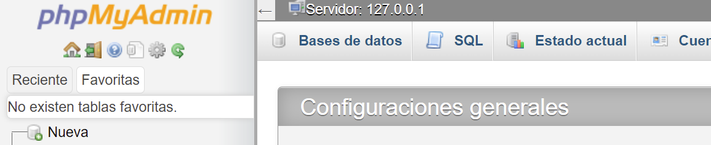
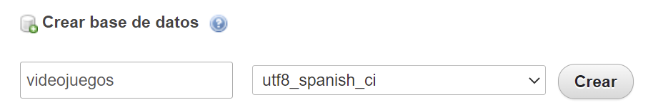
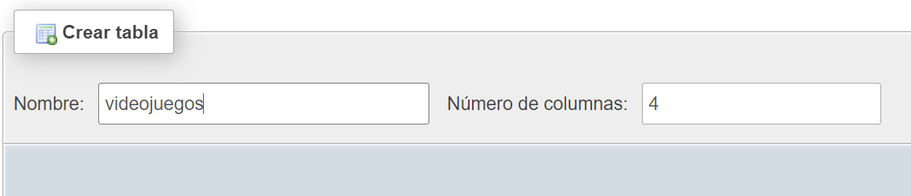
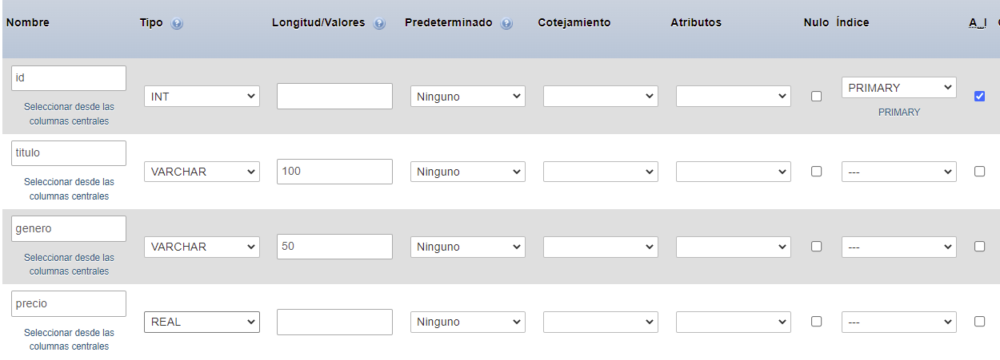

Existen diferentes alternativas para conectar y acceder a bases de datos desde PHP. El propio lenguaje ya incorpora una serie de funciones específicas que permiten conectar y utilizar directamente distintos SGBD conocidos, como MySQL o PostgreSQL. Sin embargo, en esta sección vamos a aprender a gestionar bases de datos utilizando PDO (PHP Data Objects), una capa de acceso a bases de datos independiente del SGBD que se vaya a utilizar. De este modo, el código que vamos a definir para conectar, consultar, insertar, etc, va a servirnos para cualquier servidor de base de datos que utilicemos, cambiando únicamente los datos de la conexión.
1. Preparación de la base de datos
Antes de conectar con una base de datos, evidentemente tenemos que tenerla creada y lista. Si utilizamos XAMPP, este paso puede hacerse fácilmente a través de la herramienta phpMyAdmin que ya viene instalada. Para usarla, accedemos a su URL predeterminada, que suele ser http://localhost/phpmyadmin.
NOTA: en el manager de XAMPP, tendremos que tener en marcha tanto el servidor Apache como el servidor MySQL para poder conectar con phpMyAdmin.

En el panel izquierdo tenemos un enlace Nueva para crear bases de datos, y debajo de este enlace, un listado con las bases de datos actuales para poder acceder a cualquiera de ellas.
Para crear una base de datos, simplemente indicamos su nombre y su sistema de codificación (típicamente UTF8):

Después, ya podemos crear tabla(s) en la base de datos, indicando cuántas columnas necesitamos (aunque luego podemos añadir más, o quitar):

El siguiente paso será definir el nombre, tipo de datos y restricciones de cada campo de la tabla:

Con esto, ya tendremos la tabla creada en la base de datos. Haciendo clic en ella desde el panel principal podremos consultar la información que haya guardada en cada momento.
Además, desde las opciones del menú superior Importar y Exportar podemos incorporar nuevas bases de datos (previamente exportadas) o exportar el contenido de las existentes para hacer copias de seguridad o llevarlas a otro servidor.
Crea una base de datos llamada videojuegos con una tabla videojuegos como la del ejemplo anterior, usando phpMyAdmin.
2. Configuración de la conexión
A la hora de conectar con cualquier base de datos, tenemos que tener en cuenta cuatro o cinco parámetros clave:
- Dirección del servidor de bases de datos. Típicamente suele estar alojado en la misma máquina donde tenemos el servidor web Apache, así que esta dirección suele ser localhost.
- Puerto de conexión con el servidor. Normalmente cada servidor queda escuchando por su puerto por defecto y no es necesario configurarlo. Así, el puerto por defecto de MySQL es el 3306, por ejemplo.
- Nombre de la base de datos a la que queremos conectar.
- Login y password del usuario con el que queremos conectar. En el caso de XAMPP, por defecto se crea un usuario root con contraseña vacía.
Teniendo todo esto en cuenta, el siguiente código nos va a permitir conectar con una base de datos como la que hemos creado en el paso anterior:
$host = "localhost";
$nombreBD = "videojuegos";
$usuario = "root";
$password = "";
$pdo = new PDO("mysql:host=$host;dbname=$nombreBD;charset=utf8",
$usuario, $password);El objeto PDO anterior se construye usando tres parámetros:
- URL de conexión, donde indicamos el tipo de base de datos que vamos a usar (MySQL, en este caso), dirección del servidor, nombre de la base de datos y codificación. Notar que simplemente cambiando el tipo de base de datos (PostgreSQL, Oracle…) esta misma línea nos va a servir para conectar con distintos SGBD.
- Usuario y contraseña de acceso
NOTA: estas líneas de conexión van a resultar muy frecuentes en nuestras aplicaciones si accedemos a la base de datos desde distintas páginas PHP, por lo que convendría definirlas en un archivo .inc e incluirlo en las páginas que necesiten esa conexión.
3. Ejecución de instrucciones SQL
Para ejecutar instrucciones SQL, seguiremos dos pasos:
- Preparamos la instrucción SQL a ejecutar (SELECT, INSERT, UPDATE, DELETE…). Utilizaremos la instrucción
preparepara ello. - La ejecutamos, indicando si es necesario algunos parámetros variables en la operación (valores para algunas condiciones o campos). Emplearemos la instrucción
executepara esta ejecución.
Así lanzaríamos una instrucción INSERT para insertar datos fijos en nuestra tabla videojuegos del ejemplo anterior, una vez obtenida la conexión en el objeto $pdo anterior.
$insercion = $pdo->prepare("INSERT INTO videojuegos(titulo, genero, precio)" .
" VALUES('Fifa 2020', 'Deportes', 40.95)");
$insercion->execute();3.1. Parametrizar operaciones
Lo normal es que no hagamos operaciones con todos los datos fijos, sino que parte de la query dependa de ciertos parámetros externos (datos que nos llegan de un formulario, por ejemplo). En este caso, se prepara la instrucción dejando ciertas partes variables, y luego se le asigna un valor a cada parte con la instrucción bindParam:
$insercion = $pdo->prepare("INSERT INTO videojuegos(titulo, genero, precio)" .
" VALUES(:titulo, :genero, :precio)");
$insercion->bindParam(':titulo', $_REQUEST['titulo']);
$insercion->bindParam(':genero', $_REQUEST['genero']);
$insercion->bindParam(':precio', $_REQUEST['precio']);
$insercion->execute();Notar que etiquetamos las partes variables anteponiendo : delante de cada una, y luego usamos una instrucción bindParam para asignar un valor a cada parámetro (en este caso, con datos supuestamente recogidos de un envío de formulario).
3.2. Resultado de las operaciones
En el caso de operaciones de actualización (inserciones, borrados o modificaciones), el resultado que podemos obtener tras la llamada a execute nos proporcionará información sobre si se ha podido realizar correctamente o no la operación, a través de un booleano. Así podríamos saber si la inserción anterior ha sido exitosa:
if ($insercion->execute())
{
// OK
}
else
{
// Error
}Además, en el caso de las inserciones nos puede venir bien obtener el id automático del nuevo registro generado. Para ello podemos utilizar el método lastInserId del objeto $pdo, tras ejecutar la inserción:
$insercion->execute();
$nuevoID = $pdo->lastInserId();Para las consultas (SELECT), lo que obtendremos es un array con los registros que cumplen las condiciones para entrar en el listado, con sus datos. Podemos recorrer uno a uno estos registros usando la instrucción fetch, y luego acceder a cada campo de cada registro usando un array asociativo (con el nombre de cada campo en la base de datos). Aquí vemos un ejemplo:
$consulta = $pdo->prepare("SELECT * FROM videojuegos WHERE genero=:genero");
$consulta->bindParam(':genero', $_REQUEST['genero']);
$consulta->execute();
while($registro = $consulta->fetch())
{
echo $registro['titulo'];
}4. Liberar las conexiones
Una vez hemos terminado de trabajar con la base de datos (en cada página donde lo hayamos hecho), para liberar la conexión y que la pueda utilizar otro cliente que quiera acceder, debemos anular (asignar a NULL) tanto el objeto de la conexión ($pdo en los ejemplos anteriores) como el que hemos utilizado para realizar la operación (variables $insercion o $consulta en los ejemplos anteriores). Por ejemplo:
$consulta = NULL;
$pdo = NULL;Crea una carpeta llamada 02_videojuegos en tu espacio de trabajo XAMPP. Define dentro una página llamada form_videojuego.php que simplemente tenga un formulario para dar de alta un videojuego en la base de datos (con los campos del título, género y precio, siendo el género un desplegable con varias opciones predefinidas). El formulario se enviará a insertar_videojuego.php, que realizará la inserción recogiendo los datos del formulario. Si todo ha ido bien, redirigirá a index.php, que mostrará un listado de videojuegos actualizado. Si algo ha ido mal, redirigirá a error.php con el mensaje Error insertando videojuego.
Copia la carpeta anterior a otra que se llame 03_videojuegos y modifica el archivo index.php del ejercicio anterior para añadir un formulario de búsqueda que permita filtrar videojuegos por precio. Si especificamos un precio, se mostrarán sólo los videojuegos que sean más baratos que el precio indicado.